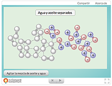
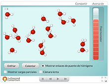

¿Qué es Ciencia Interactiva?
Es una iniciativa para compartir objetos de aprendizaje para las ciencias naturales. Los modelos de simulación son una gran herramienta para docentes y estudiantes. En este caso vamos a compartir diferentes simuladores, algunos de los cuales permiten "abrir la caja negra" y programarlos, además de usarlos.
Todos los objetos interactivos que vamos a presentar acá son gratuitos y están en español. Muchos de ellos fueron traducidos por mí, Cristián Rizzi, que soy además el creador de este sitio.

